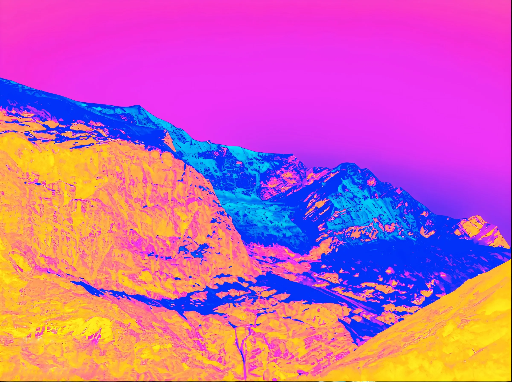

00:00:01:00Arte · VJ / Visuales en tiempo real
Pink Mountains
Visuales con IA en tiempo real — un sistema generativo hecho en TouchDesigner con Stable Diffusion.
- Categoría
- VJ / Visuales en tiempo real
- Año
- 2026
- Herramientas
- TouchDesigner, Stable Diffusion, img2img / latent diffusion, API/socket integration
Un sistema generativo que une la síntesis de imagen en tiempo real con inteligencia artificial, construido en TouchDesigner e integrado con Stable Diffusion. El sistema procesa señales en vivo y las traduce en imágenes latentes que se actualizan sin parar, creando un flujo visual orgánico e impredecible en el que cada fotograma es único e irrepetible.
A diferencia del video pregrabado o los loops, este sistema piensa mientras genera: los parámetros del modelo de difusión se modulan desde TouchDesigner, lo que permite que la imagen mute, derive y responda en tiempo real. El resultado es un espacio visual que vive en el límite entre el control y el azar, entre la intención del autor y la lógica emergente del modelo.

Siguiente en ArteVideoclip
Cicatrices — Linxes →